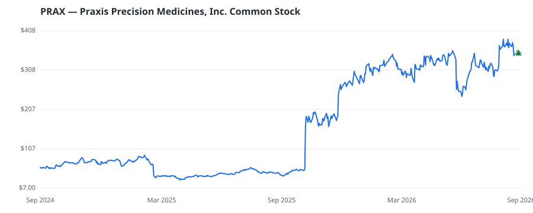

bullish · bearish · n/a — dots: price>SMA10 · SMA10>SMA50 · SMA50>SMA200 · up>down volume (20d)
Pharmaceuticals & Biotech · mid cap
Members who bought PRAX earned a dollar-weighted +0.0% from their disclosure dates, versus +0.0% for the S&P 500 over the same holding windows (+0.0% alpha).

▲ green = a disclosed purchase · ▼ red = a disclosed sale (plotted on disclosure date)
Praxis Precision Medicines Inc is a clinical-stage biopharmaceutical company. It is engaged in translating genetic insights into the development of therapies for patients affected by central nervous system disorders characterized by a neuronal excitation-inhibition imbalance. The company applies genetic insights to the discovery and development of therapies for neurological disorders through two proprietary platforms: Cerebrum and Solidus. It has established a diversified, multimodal CNS portfolio with four clinical-stage product candidates across movement disorders and epilepsy, which include PHARMACEUTICAL PREPARATIONS · website
| Revenue | $0 | Net income | $-303.3M |
|---|---|---|---|
| Operating income | $-326.2M | Diluted EPS | $-13.48 |
| Assets | $937.9M | Equity | $878.1M |
| Member | Chamber | Out-performer | Disclosed buys $ | Return on buys |
|---|---|---|---|---|
| Gilbert Cisneros | house | — | $8K | +0.0% |
Disclosed $ figures are bracket midpoints — filings report ranges (e.g. $1,001–$15,000), not exact amounts.
This name produced 0.0% of the ranked funds’ total alpha.
| Fund | Fund alpha vs SPY | Position | % of book |
|---|---|---|---|
| Brick & Kyle, Associates | +13% | $0M | 0.1% |
Hedge data: SEC EDGAR 13F · ranked funds beat SPY in >50% of their quarters · fund alpha = mirror-portfolio return minus SPY.